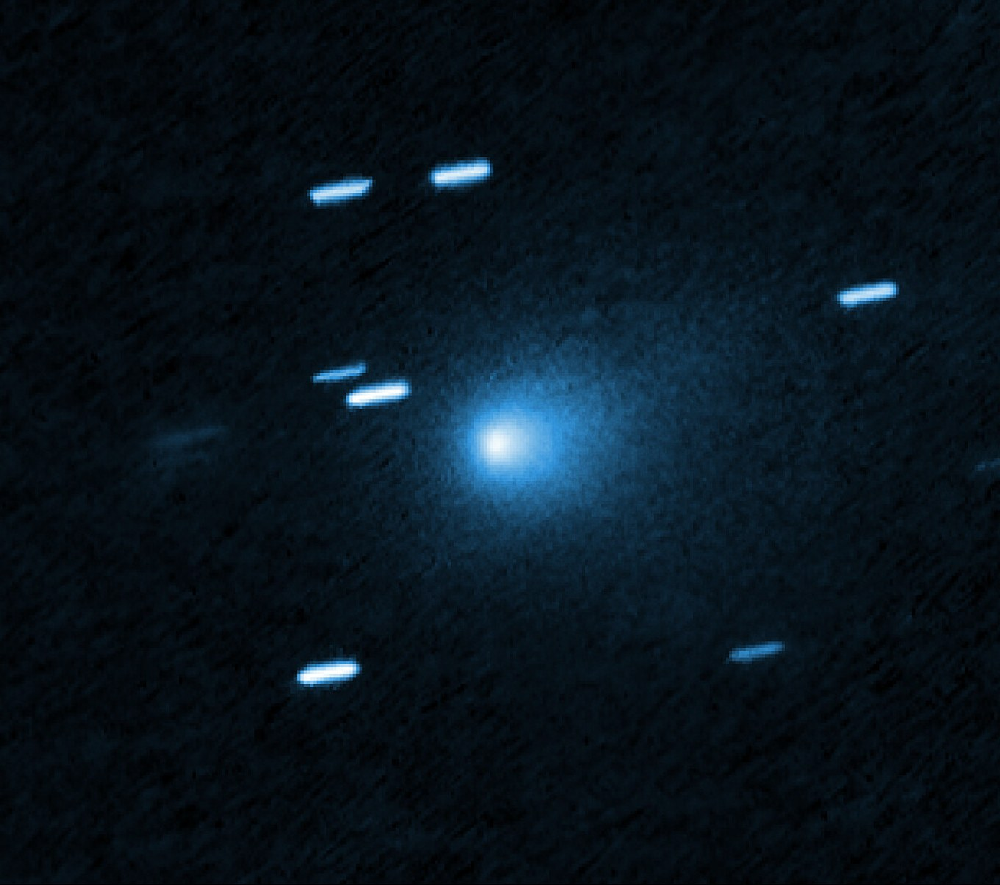
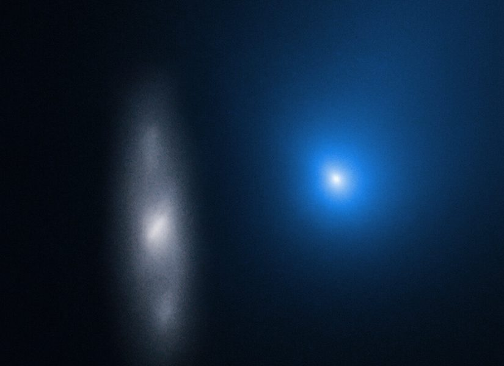
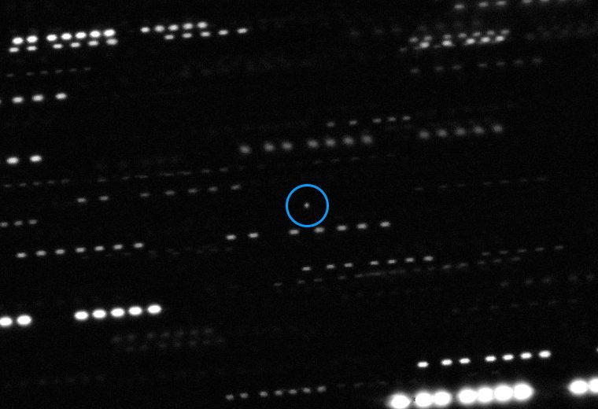
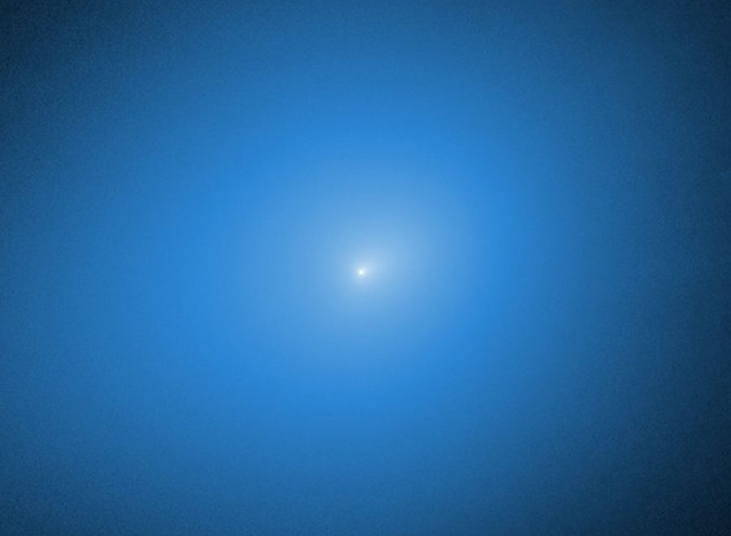

Studying 3I/ATLAS and the interstellar objects to come.

Open zero-aperture comet astrometry.

2I/Borisov, November 2019. Credit: NASA, ESA, and D. Jewitt (UCLA)castle639.github.io/Tests your program before 4I arrives.

1I/ʻOumuamua, circled, 2017. Credit: ESO/K. Meech et al.github.com/Castle639/Station sigmas for anyone fitting 3I's orbit.

3I/ATLAS, 30 November 2025. Credit: NASA, ESA, STScI, D. Jewitt (UCLA). Image Processing: J. DePasquale (STScI)github.com/Castle639/